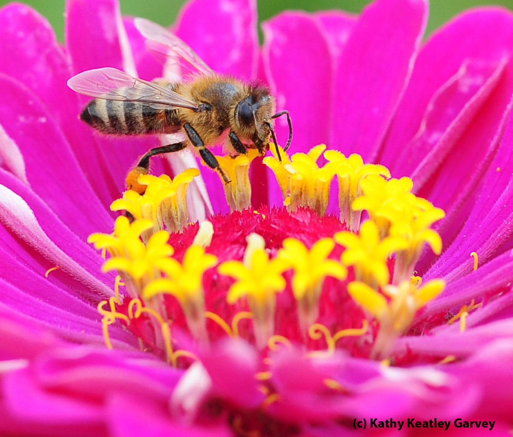
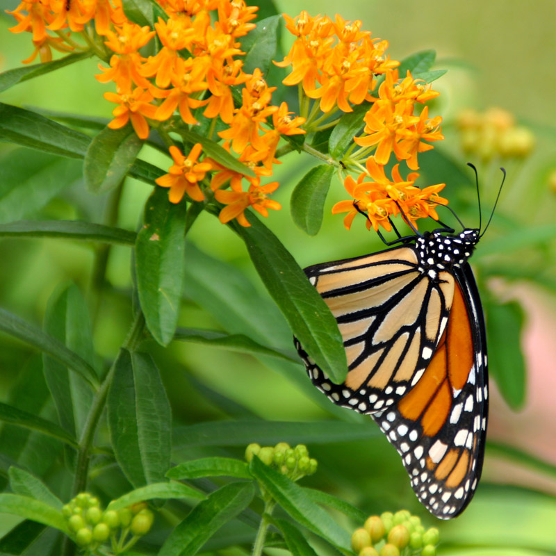
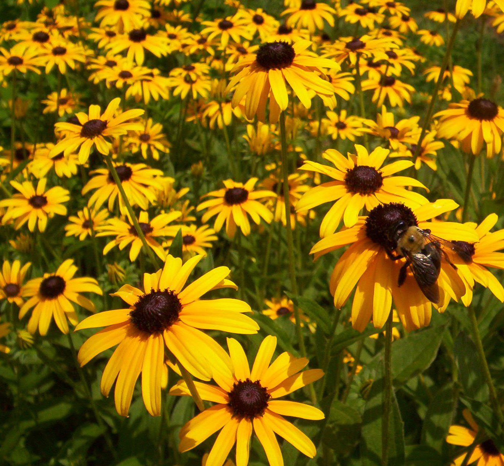

Zinnias
Interplant zinnias between rows of vegetables as a border to attract pollinators for your garden!
Milkweed
Milkweed is an essential plant for hosting the caterpillars of monarch butterflies. It is one of 115 species in North America and crucial to the life cycle of this important pollinator.
Black-Eyed Susan
These North American wildflowers are excellent for attracting bees, butterflies, and many other pollinating insects.
